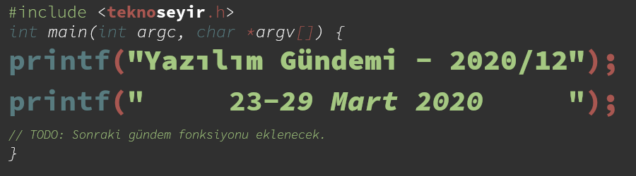
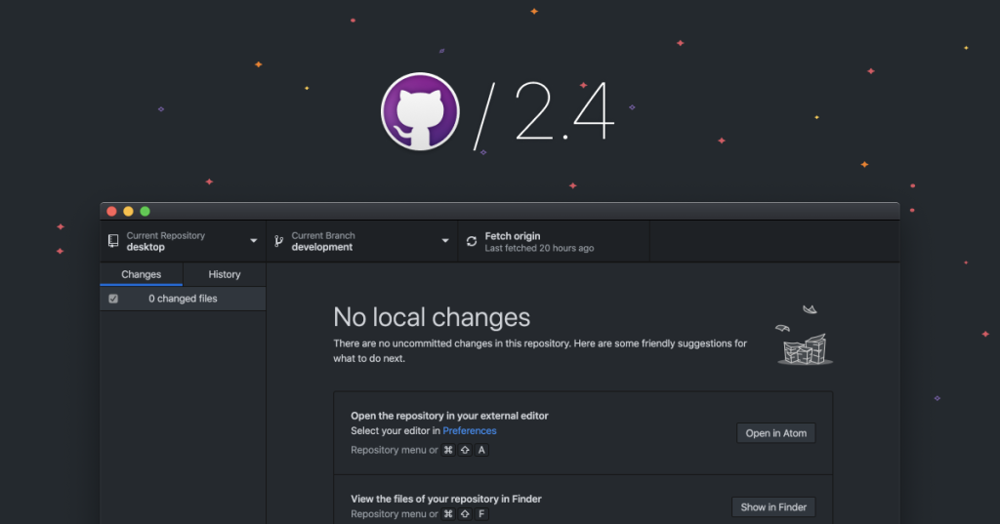

Yazılım Gündemi - 2020/12
23-29 Mart 2020
İçindekiler

< Önceki Gündem | 23-29 Mart 2020 | Sonraki Gündem >
1 Safari 13.1 ile tüm üçüncü parti çerezleri engellemeye başladı
Bu hafta içerisinde yayınlanan iOS ve iPadOS güncellemeleri ile birlikte Apple ekosisteminin varsayılan tarayıcısı olan Safari, artık tüm üçüncü parti çerezleri (cookie) engelliyor. Intelligent Tracking Preventation (ITP) isimli özelliklerindeki bu güncellemenin amacı ise kullanıcıların internette gezinirken takip edilmesini önlemek. Bu derece sert bir kuralı uygulayan bir diğer tarayıcı ise Tor Browser. Brave Browser ise bazı istisnalar hariç diğer çerezleri engelliyor.
İlgili değişiklikler Apple tarafından açık kaynak olarak geliştirilen tarayıcı motoru WebKit'in blog sayfasında duyuruldu. Yazıda bu yolda yalnız olmadıklarını Google tarafından geliştirilen Chrome tarayıcısının da 2022 yılı için bu tarz bir değişikliğe hazırlandığını belirtmiş. Aynı zamanda bu uygulamanın standart olması için W3C kurumuna da başvuracaklarını belirtmişler.
Değişikliğin biz geliştiricileri etkileyen kısmında ise bizlere üçüncü parti çerezler yerine kullanabileceğimiz 3 farklı opsiyon sunmuşlar. Bunlar şu şekilde:
- OAuth 2.0 Authorization
- The Storage Access API
- Popup'lar için Geçici Uyumluluk Çözümü
Fakat bu değişiklikler sadece çerezleri etkilemiyor. Tarayıcıda bazı verileri depolamak için kullandığımız IndexedDB, LocalStorage ve SessionStorage gibi yapılar da etkileniyor. Artık bu yapılar üzerinde sadece 7 günlük veriler tutabileceğiz. Bunu yapmalarındaki amaç ise büyük ihtimal kullanıcıları takip eden servislerin çerez engellemesini bu tarz yapıları kullanarak aşmalarını istememeleri olabilir.
Bu konu hakkında siz ne düşünüyorsunuz? Safari'nin çerezlere olan bu sert yaklaşımı siz doğru mu? Yorumlar bölümünde konuşalım.
2 Git 2.26 sürümü yayınlandı
En popüler versiyon kontrol sistemlerinden biri olan Git, bu hafta içerisinde 2.26 numaralı yeni sürümünü duyurdu. Bu sürüm ile birlikte gelen bazı değişikliklere birlikte bakalım.
2.1 Varsayılan protokol versiyonu 2 olarak güncellendi
2018 yılında Git'e Google tarafından katkı sağlanarak eklenen Git protocol version 2 artık varsayılan olarak kullanılacak. Önceki Git protokolünün bazı ölçekleme sorunları vardı. Bir Git sunucusu, istemci (client) özel olarak istemediği halde tüm branch'lar, tag'lar ve diğer referanslar hakkında bilgi veriyordu. İlk bakışta "bunda ne var" diye düşünebilirsiniz ama büyük çaplı projeler için durum böyle değil. Kullanıcı sadece master dalıyla ilgilendiği halde ona tüm dallar ve etiketlerle ilgili bilgi dönmesi demek fazladan birkaç megabyte'ın harcanması demek ve bu da gereksiz veri trafiği anlımına geliyor. Şimdi ise büyük boyutlu depolardan daha kısa bir sürede veri çekebiliyor olacağız.
Eğer Git versiyonunuzu yükseltmeye henüz hazır değilseniz ve Git 2.19 üzeri bir sürüm numarasına sahipseniz. Bu değişikliği siz de aşağıdaki komutu çalıştırarak uygulayabilirsiniz:
git config --global protocol.version 2
Bu protokol versiyonu hakkında daha detaylı bilgi almak için bu sayfayı ziyaret edebilirsiniz.
2.2 git sparse-checkout komutunda değişiklikler
Bir önceki sürüm (2.25) güncellemesiyle birlikte gelen bu özelliği Yazılım
Gündemi - 2020/03 yazısında detaylıca anlatmıştık. Dolayısıyla özelliğin
teknik detayları için önce o yazıyı okumanızı tavsiye ederim. Bu sürümle
ise git sparse-checkout add modu eklendi. Artık daha kolay bir şekilde
istediğimiz klasörleri indirebileceğiz. Örnek kullanım için:
$ git clone --filter=blob:none --sparse git@github.com:git/git.git $ cd git $ git sparse-checkout init --cone $ git sparse-checkout add t $ git sparse-checkout add Documentation $ git sparse-checkout list Documentation t
Yukarıda sırasıyla şu işlemleri yaptık:
- github.com/git/git deposunu sparse-checkout özelliğini kullanarak clone edeceğimizi belirttik.
gitklasörünün içine girdik. sparse-checkout yapacağımız için içi boş.sparse-checkoutözelliğini başlattık.tisimli klasörü uzak sunucudan indirdik.Documentationisimli klasörü uzak sunucudan indirdik.sparse-checkoutyaptığımız klasörlerin listesini yazdırdık.
Git 2.26 sürümüyle birlikte gelen diğer yeni özellik ve değişiklikler için GitHub tarafından hazırlanmış şu blog yazısını okuyabilir ya da konu başlığına eklediğim bağlantıya tıklayabilirsiniz.
3 TypeScript 3.9 Beta duyuruldu
Microsoft tarafından geliştirilen JavaScript üreten programlama dili TypeScript'in bu hafta içerisinde 3.9 Beta etiketli sürümü duyuruldu. Microsoft TypeScript takımının bloglarında yayınladıkları yazıyı inceledim fakat dile uzak birisi olduğum için pek bir şey anladığım söylenemez. Bu nedenle bu sefer de sizi konu başlığına eklediğim bağlantıya tıklayamaya davet ediyorum. TypeScript'i ilgi alanıma girerse, ilerleyen Yazılım Gündemi yazılarında daha detaylı değinebilirim belki.
Henüz "Beta" sürecinde olduğu için çalışan projelerinizi bu sürüme geçirmeniz tavsiye edilmez ama yine de ayrı olarak bir deneme yapmak isterseniz şu komutu çalıştırarak TypeScript 3.9 Beta'yı projenize ekleyebilirsiniz:
npm install typescript@beta
4 Google Play üzerindeki Multiplayer API desteği sonlanıyor
Gün geçmiyor ki bir başka Google hizmeti ya da ürünü Google Mezarlığında yerini almasın. Android için oyun geliştirirken Google'ın geliştiriciler için sunduğu oyununuza çok-oyuncu (multiplayer) API desteğini kullanabiliyordunuz. Google Play üzerinden sağlanan bu API ile birlikte arka plandaki bazı iş yüklerinden kurtuluyordunuz fakat 31 Mart itibariyle bu özellik artık çalışmayacak. Eğer sizin de Google Play markette yayınlanmış ve Multiplayer API kullanan bir oyununuz varsa bu tarihten itibaren çalışmamaya başlayabilir.
Neyse ki bazen Google bir taraftan alırken bir taraftan da yeni alternatifler koyabiliyor. Bu hafta içerisinde Google Cloud tarafında oyun yönetimi için yeni bir çözüm tanıtıldı: Game Servers. Henüz "beta" etiketiyle sunuluyor fakat önümüzdeki dönemlerde stabil bir sürüme de kavuşacaktır.
5 GitHub Desktop uygulamasının 2.4 sürümü yayınlandı

GitHub'ın henüz sadece Windows ve Mac işletim sistemlerini destekleyen masaüstü yazılımı 2.4 sürümüne ulaştı. Bu sürümle birlikte eklenen bazı özellikler şu şekilde:
- Proxy desteği: Artık GitHub Desktop uygulamasının internetle olan bağlantısını bir proxy üzerinden geçirip kullanabileceğiz.
- Issue oluşturmak için kısayol: Repository menüsü altına "Create Issue on GitHub" seçeneği eklendi ve tıkladığınızda varsayılan tarayıcınız üzerinde ilgili deponun issue oluşturma sayfasını açıyor.
- Koyu tema özelliği betadan çıktı: Çeşitli testler ve geri dönüşlerden sonra iyileştirilen uygulamanın koyu tema modu sonunda beta'dan çıktı ve herkese açıldı. Keşke GitHub'ın web arayüzüne de gelse koyu tema özelliği ya da bu uygulamanın GNU/Linux dağıtımları için olan sürümünü çıkarsınlar o da uyar bana, gece karanlıkta çalışırken GitHub'ı açınca far görmüş tavşan gibi kalmaktan bıktım! Zaten olmaması ayrı bir saçmalık. Çoğunlukla geliştiricilerin kullandığı bir web sitesinde neden koyu tema özelliği olmaz gerçekten anlamak çok güç.
Uygulamayı bu adres üzerinden indirebilirsiniz.
6 Diğer Haberler
- GitHub, COVID-19 salgınıyla ilgili proje geliştirmek isteyen geliştiriciler için rehber niteliğinde bir blog yazısı yayınladı.
- GitHub Şubat ayı sonlarında yaşanan kesintilerle ilgili analiz yayınlandı.
- GitLab, IPv6 desteğini tamamlandı.
- Spotify, yeni Podcast API'sini duyurdu.
- .NET Core Mart Güncellemeleri yayınlandı:
- Microsoft Visual C/C++ için uyumlu preprocessor desteği duyuruldu.
- COVID-19 Global Hackathon 1.0 için kayıtlar başladı.
- LLVM 10.0.0 yayınlandı.
- Swift programlama dilinin 5.2 sürümü yayınlandı.
- Liberica JDK 14 sürümü yayınlandı.
- Kubernetes 1.18 sürümü yayınlandı.
- Angular kütüphanesinin 9.1.0 sürümü yayınlandı.
- Kafka-on-Pulsar projesi duyuruldu. GitHub Deposu
- Cloud için güvenlik aracı Panther açık kaynak olarak tanıtıldı. GitHub Deposu
- GraphQL için güvenlik testi araco InQL Scanner açık kaynak olarak tanıtıldı. GitHub Deposu
- OpenAPIGenerator 4.3.0 sürümü yayınlandı.
7 Lisans

Yazılım Gündemi - 2020/12 yazısı Eren Hatırnaz tarafından Creative Commons Atıf-GayriTicari-AynıLisanslaPaylaş 4.0 Uluslararası Lisansı (CC BY-NC-SA 4.0) ile lisanslanmıştır.